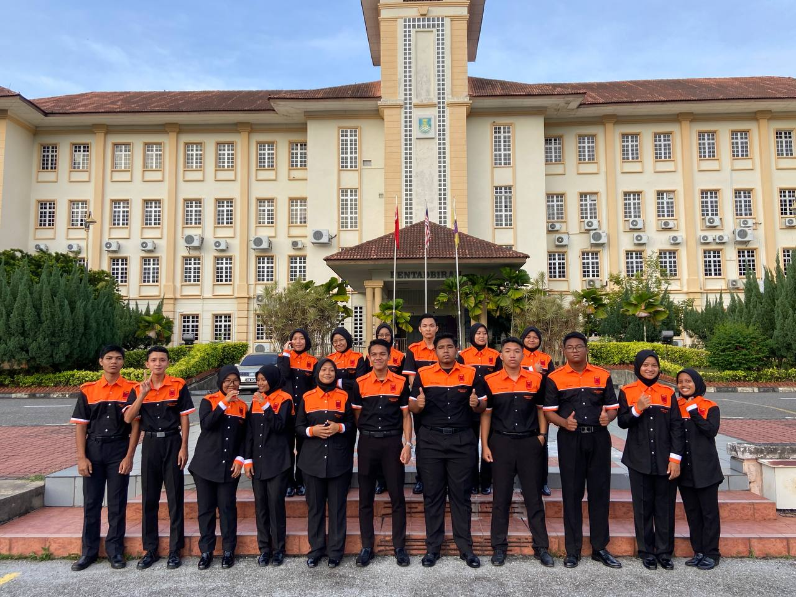
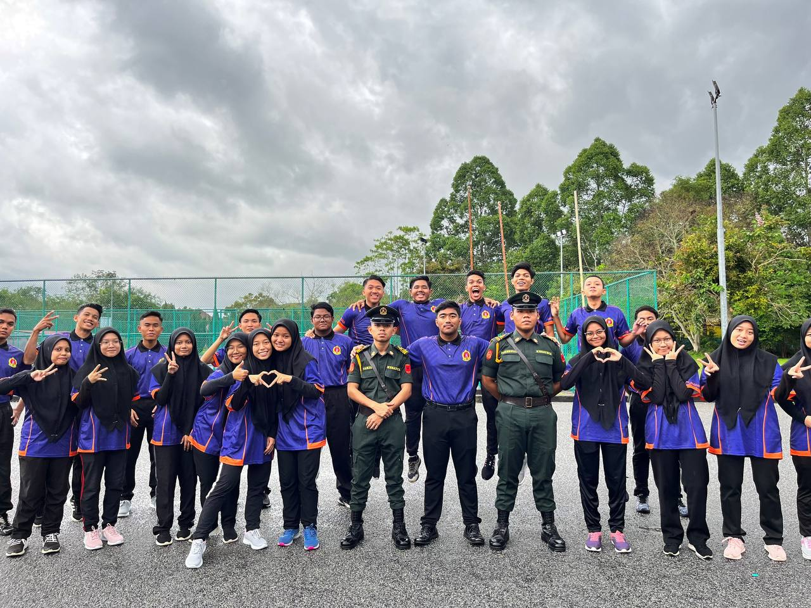
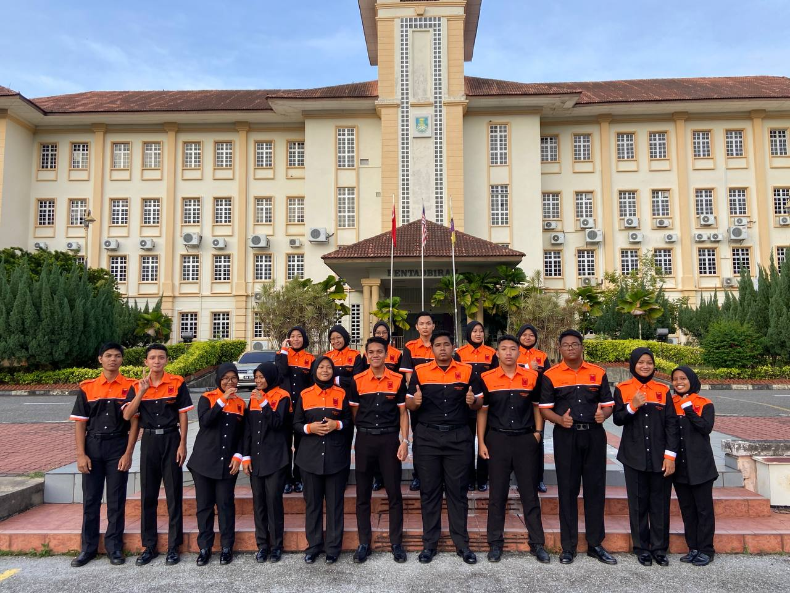
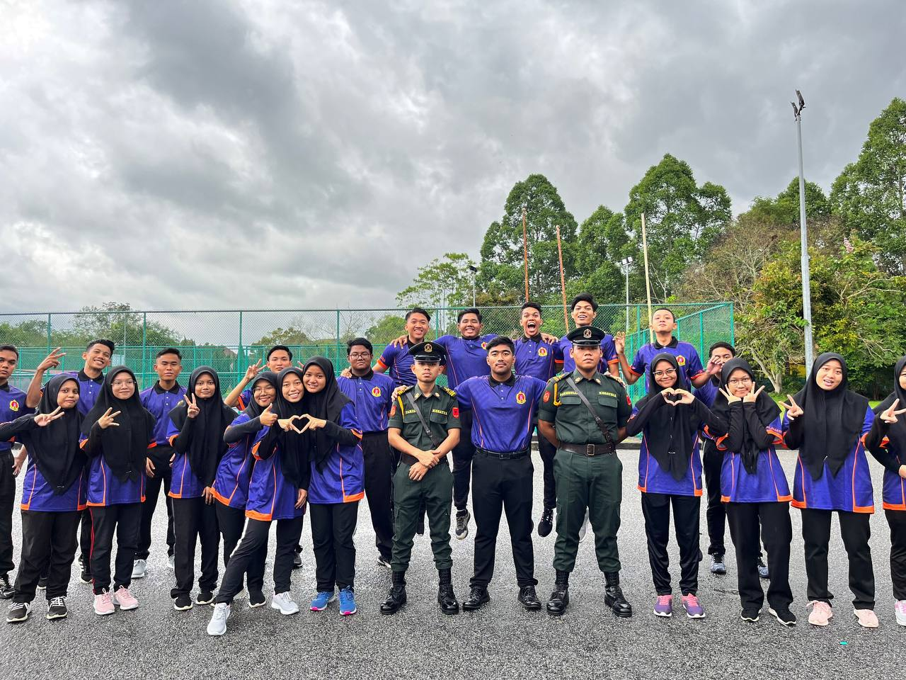

They are always together when I am away from home and at school,
and we cry, laugh, get sick, and support one another.
This is why I refer to them as my second family.
They are constantly available whenever I need them. Those who pay close attention whenever my heart speaks.
 Biodata
Experience
Education
Family
Gallery
Friends
Biodata
Experience
Education
Family
Gallery
Friends

 


